| sample | min | max | mean | variance | skew | kurtosis | normal-t | normal-p | α | |
|---|---|---|---|---|---|---|---|---|---|---|
| ctt:pretest | 12 | 0 | 0 | nan | nan | nan | nan | nan | nan | 0.7600 |
| ctt:posttest | 12 | 0 | 0 | nan | nan | nan | nan | nan | nan | 0.7194 |
| ctt:abs_learn_gain | 12 | 0 | 0 | nan | nan | nan | nan | nan | nan | 0.7194 |
| ctt:rel_learn_gain | 12 | 0 | 0 | nan | nan | nan | nan | nan | nan | 0.7194 |
| irt:pretest | 12 | 0 | 0 | 0.01 | 0.11 | 0.64 | -0.97 | 1.772 | 0.4122 | 0.1033 |
| irt:posttest | 12 | 0 | 0 | 0.03 | 0.71 | 0.60 | 0.97 | 3.897 | 0.1425 | 0.2961 |
| irt:abs_learn_gain | 12 | 0 | 0 | 0.03 | 0.80 | 1.14 | 1.13 | 7.157 | 0.0279 | 0.1033 |
| irt:rel_learn_gain | 12 | 0 | 0 | 0.00 | 0.00 | 1.14 | 1.11 | 7.072 | 0.0291 | 0.1033 |
| adjusted irt:pretest | 12 | 0 | 0 | 2.11 | 0.11 | 0.15 | -1.54 | 4.195 | 0.1227 | 0.5475 |
| adjusted irt:posttest | 12 | 0 | 0 | 2.12 | 0.15 | 0.11 | -1.28 | 1.754 | 0.4161 | 0.5800 |
| adjusted irt:abs_learn_gain | 12 | 0 | 0 | 0.02 | 0.01 | 1.57 | 1.72 | 11.559 | 0.0031 | 0.5475 |
| adjusted irt:rel_learn_gain | 12 | 0 | 0 | 0.00 | 0.00 | 1.57 | 1.70 | 11.478 | 0.0032 | 0.5475 |
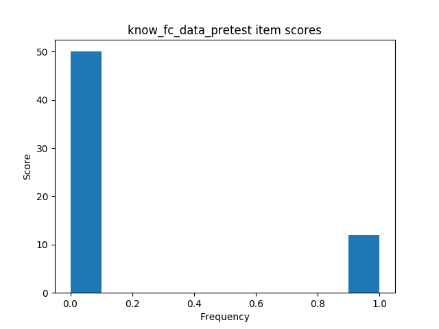 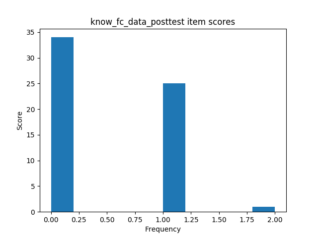 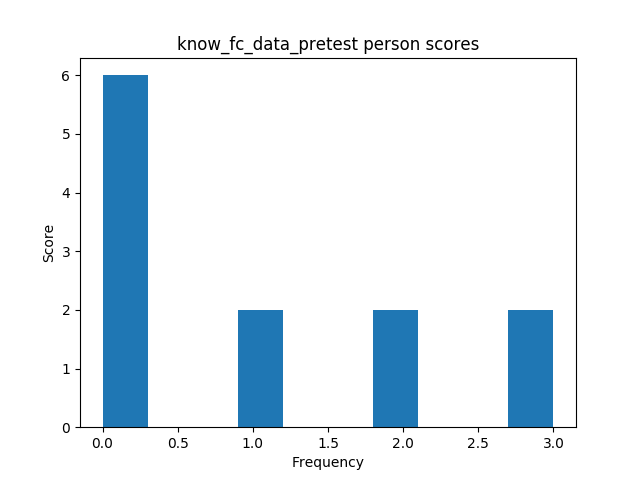 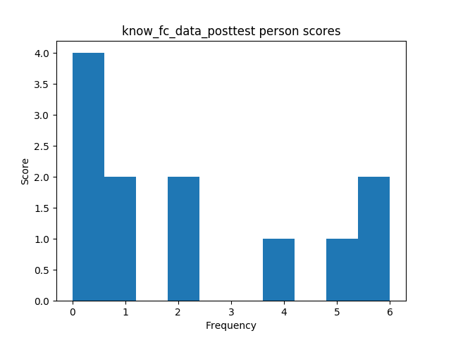
| sample | min | max | mean | variance | skew | kurtosis | normal-t | normal-p | α | |
|---|---|---|---|---|---|---|---|---|---|---|
| ctt:pretest | 11 | 0 | 0 | nan | nan | nan | nan | nan | nan | -0.3750 |
| ctt:posttest | 11 | 0 | 0 | nan | nan | nan | nan | nan | nan | 0.7031 |
| ctt:abs_learn_gain | 11 | 0 | 0 | nan | nan | nan | nan | nan | nan | -0.3750 |
| ctt:rel_learn_gain | 11 | 0 | 0 | nan | nan | nan | nan | nan | nan | -0.3750 |
| irt:pretest | 11 | 0 | 0 | 0.00 | 0.00 | 0.18 | -1.97 | 13.123 | 0.0014 | 0.0000 |
| irt:posttest | 11 | 0 | 0 | 0.01 | 0.08 | -0.42 | -0.24 | 0.875 | 0.6458 | 0.1191 |
| irt:abs_learn_gain | 11 | 0 | 0 | 0.01 | 0.08 | -0.43 | -0.24 | 0.901 | 0.6372 | 0.0000 |
| irt:rel_learn_gain | 11 | 0 | 0 | 0.00 | 0.00 | -0.43 | -0.24 | 0.901 | 0.6372 | 0.0000 |
| adjusted irt:pretest | 11 | 0 | 0 | 0.00 | 0.00 | 0.18 | -1.97 | 13.123 | 0.0014 | 0.0000 |
| adjusted irt:posttest | 11 | 0 | 0 | 0.01 | 0.08 | -0.42 | -0.24 | 0.875 | 0.6458 | 0.1191 |
| adjusted irt:abs_learn_gain | 11 | 0 | 0 | 0.01 | 0.08 | -0.43 | -0.24 | 0.901 | 0.6372 | 0.0000 |
| adjusted irt:rel_learn_gain | 11 | 0 | 0 | 0.00 | 0.00 | -0.43 | -0.24 | 0.901 | 0.6372 | 0.0000 |
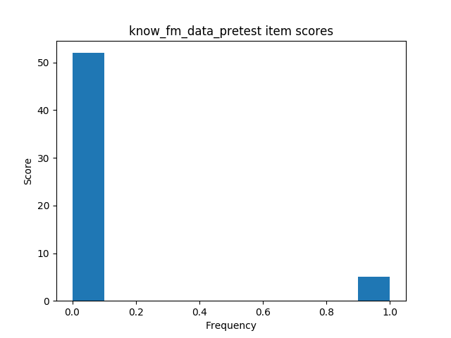 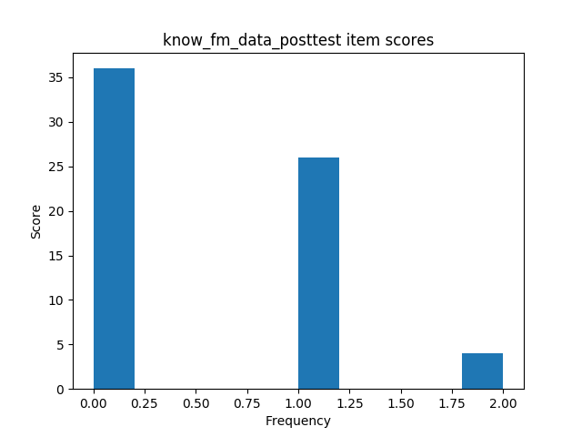 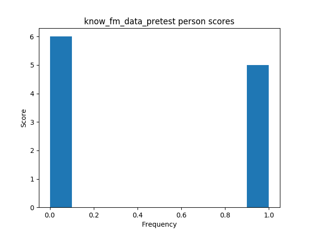 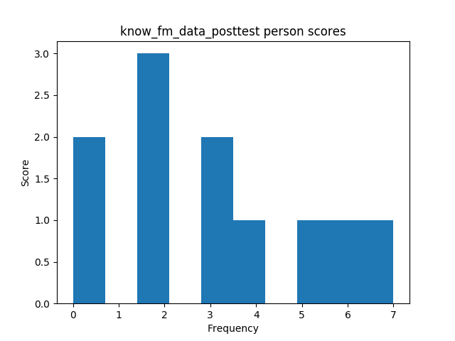
| sample | min | max | mean | variance | skew | kurtosis | normal-t | normal-p | α | |
|---|---|---|---|---|---|---|---|---|---|---|
| ctt:pretest | 23 | 0 | 0 | nan | nan | nan | nan | nan | nan | 0.7036 |
| ctt:posttest | 23 | 0 | 0 | nan | nan | nan | nan | nan | nan | 0.7035 |
| ctt:abs_learn_gain | 23 | 0 | 0 | nan | nan | nan | nan | nan | nan | 0.7035 |
| ctt:rel_learn_gain | 23 | 0 | 0 | nan | nan | nan | nan | nan | nan | 0.7035 |
| irt:pretest | 23 | 0 | 0 | 0.00 | 0.39 | 0.76 | 0.67 | 4.536 | 0.1035 | 0.2159 |
| irt:posttest | 23 | 0 | 0 | 0.04 | 1.04 | 0.61 | -0.27 | 1.958 | 0.3757 | 0.4208 |
| irt:abs_learn_gain | 23 | 0 | 0 | 0.03 | 1.29 | 0.48 | 0.02 | 1.570 | 0.4561 | 0.2159 |
| irt:rel_learn_gain | 23 | 0 | 0 | 0.00 | 0.00 | 0.46 | 0.02 | 1.483 | 0.4764 | 0.2159 |
| adjusted irt:pretest | 23 | 0 | 0 | 0.00 | 0.39 | 0.76 | 0.67 | 4.536 | 0.1035 | 0.2159 |
| adjusted irt:posttest | 23 | 0 | 0 | 0.04 | 1.04 | 0.61 | -0.27 | 1.958 | 0.3757 | 0.4208 |
| adjusted irt:abs_learn_gain | 23 | 0 | 0 | 0.03 | 1.29 | 0.48 | 0.02 | 1.570 | 0.4561 | 0.2159 |
| adjusted irt:rel_learn_gain | 23 | 0 | 0 | 0.00 | 0.00 | 0.46 | 0.02 | 1.483 | 0.4764 | 0.2159 |
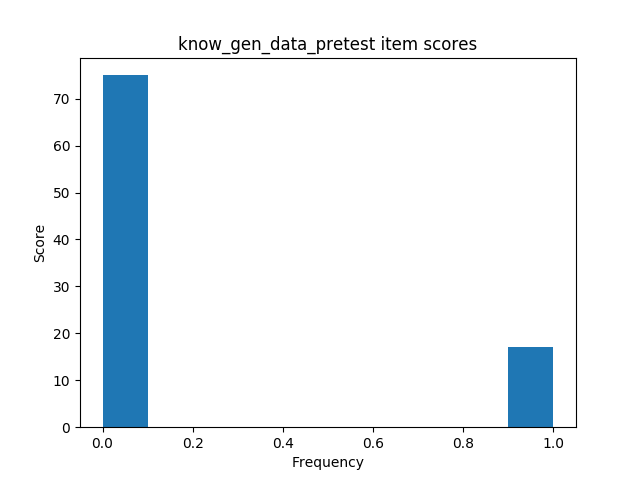 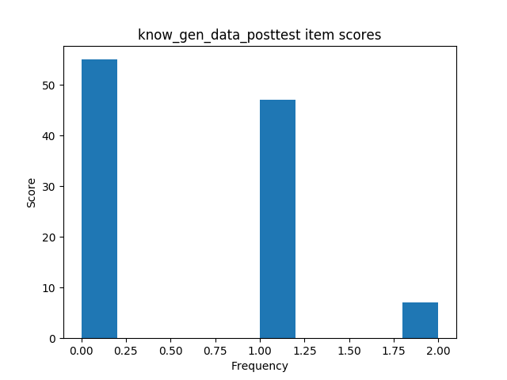 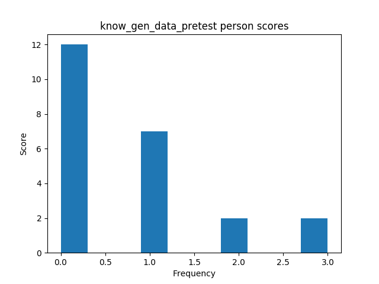 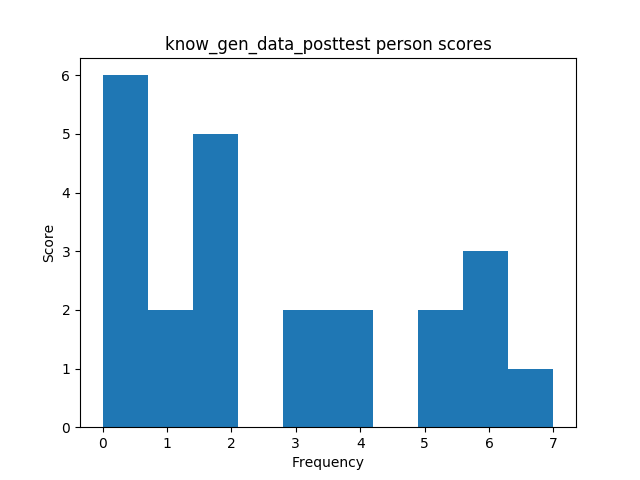
| sample | min | max | mean | variance | skew | kurtosis | normal-t | normal-p | α | |
|---|---|---|---|---|---|---|---|---|---|---|
| ctt:pretest | 12 | 0 | 0 | nan | nan | nan | nan | nan | nan | 0.7159 |
| ctt:posttest | 12 | 0 | 0 | 2.42 | 6.27 | 0.48 | -1.01 | 1.287 | 0.5254 | 0.7112 |
| ctt:abs_learn_gain | 12 | 0 | 0 | nan | nan | nan | nan | nan | nan | 0.7112 |
| ctt:rel_learn_gain | 12 | 0 | 0 | nan | nan | nan | nan | nan | nan | 0.7112 |
| irt:pretest | 12 | 0 | 0 | -0.01 | 0.89 | 0.80 | 0.63 | 4.027 | 0.1335 | 0.4251 |
| irt:posttest | 12 | 0 | 0 | -0.06 | 2.17 | -0.25 | -1.34 | 2.313 | 0.3146 | 0.7278 |
| irt:abs_learn_gain | 12 | 0 | 0 | -0.05 | 2.82 | 0.01 | -1.38 | 2.453 | 0.2933 | 0.4251 |
| irt:rel_learn_gain | 12 | 0 | 0 | -0.00 | 0.00 | -0.01 | -1.40 | 2.618 | 0.2700 | 0.4251 |
| adjusted irt:pretest | 12 | 0 | 0 | 2.05 | 0.08 | 0.44 | -1.32 | 2.604 | 0.2720 | 0.5220 |
| adjusted irt:posttest | 12 | 0 | 0 | 2.05 | 0.17 | -0.17 | -1.15 | 1.072 | 0.5851 | 0.6420 |
| adjusted irt:abs_learn_gain | 12 | 0 | 0 | 0.00 | 0.05 | -0.06 | -1.07 | 0.676 | 0.7131 | 0.5220 |
| adjusted irt:rel_learn_gain | 12 | 0 | 0 | 0.00 | 0.00 | -0.05 | -1.08 | 0.720 | 0.6977 | 0.5220 |
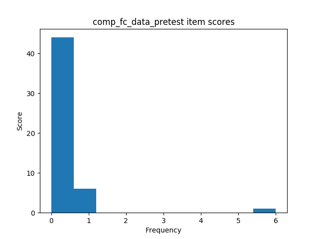 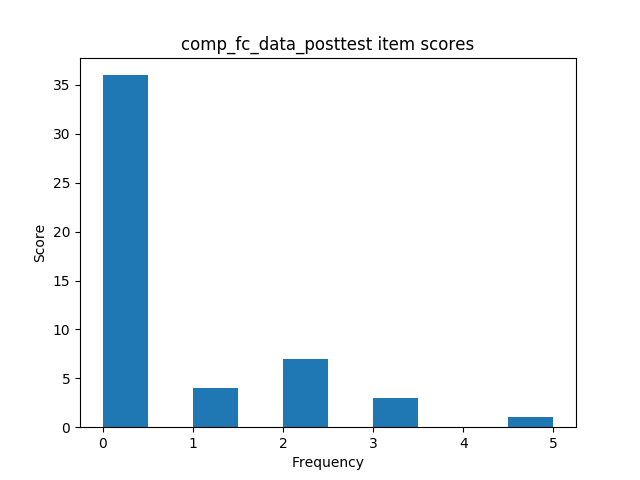 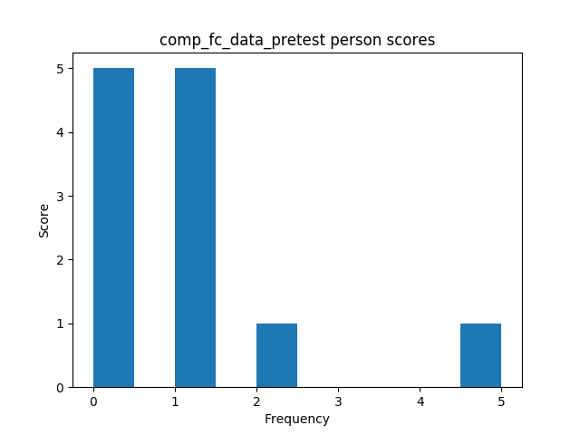 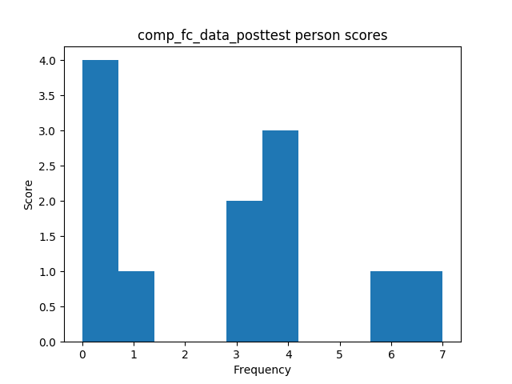
| sample | min | max | mean | variance | skew | kurtosis | normal-t | normal-p | α | |
|---|---|---|---|---|---|---|---|---|---|---|
| ctt:pretest | 11 | 0 | 0 | nan | nan | nan | nan | nan | nan | 0.7454 |
| ctt:posttest | 11 | 0 | 0 | 1.91 | 6.29 | 1.42 | 1.09 | 8.925 | 0.0115 | 0.7282 |
| ctt:abs_learn_gain | 11 | 0 | 0 | nan | nan | nan | nan | nan | nan | 0.7282 |
| ctt:rel_learn_gain | 11 | 0 | 0 | nan | nan | nan | nan | nan | nan | 0.7282 |
| irt:pretest | 11 | 0 | 0 | -0.01 | 1.01 | 0.49 | -0.80 | 0.841 | 0.6568 | 0.5617 |
| irt:posttest | 11 | 0 | 0 | -0.00 | 1.03 | -0.58 | -0.94 | 1.355 | 0.5080 | 0.6524 |
| irt:abs_learn_gain | 11 | 0 | 0 | 0.00 | 0.61 | 0.48 | -0.60 | 0.755 | 0.6856 | 0.5617 |
| irt:rel_learn_gain | 11 | 0 | 0 | -0.00 | 0.00 | 0.43 | -0.58 | 0.614 | 0.7356 | 0.5617 |
| adjusted irt:pretest | 11 | 0 | 0 | -0.01 | 1.01 | 0.49 | -0.80 | 0.841 | 0.6568 | 0.5617 |
| adjusted irt:posttest | 11 | 0 | 0 | -0.00 | 1.03 | -0.58 | -0.94 | 1.355 | 0.5080 | 0.6524 |
| adjusted irt:abs_learn_gain | 11 | 0 | 0 | 0.00 | 0.61 | 0.48 | -0.60 | 0.755 | 0.6856 | 0.5617 |
| adjusted irt:rel_learn_gain | 11 | 0 | 0 | -0.00 | 0.00 | 0.43 | -0.58 | 0.614 | 0.7356 | 0.5617 |
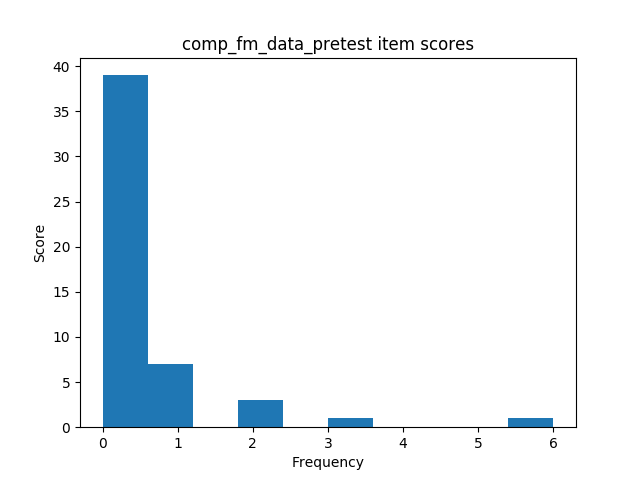 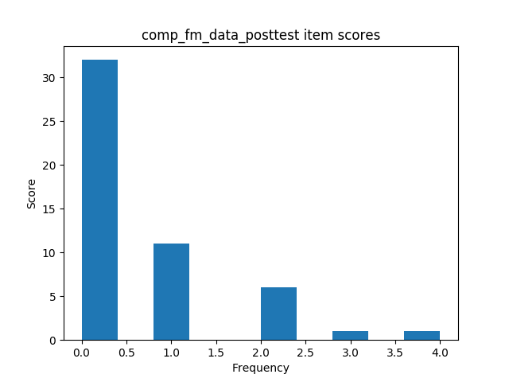 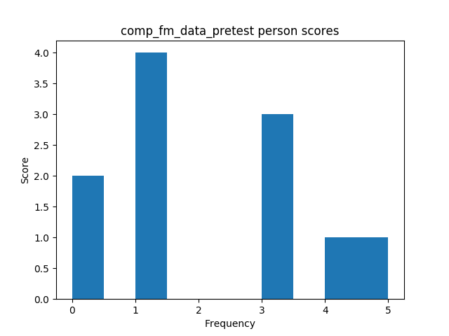 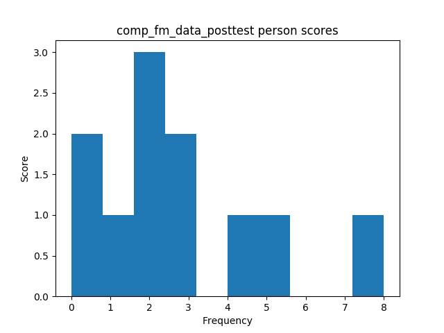
| sample | min | max | mean | variance | skew | kurtosis | normal-t | normal-p | α | |
|---|---|---|---|---|---|---|---|---|---|---|
| ctt:pretest | 23 | 0 | 0 | 0.65 | 1.87 | 2.17 | 3.67 | 23.331 | 0.0000 | 0.7229 |
| ctt:posttest | 23 | 0 | 0 | 2.04 | 5.68 | 0.94 | -0.09 | 4.367 | 0.1127 | 0.7049 |
| ctt:abs_learn_gain | 23 | 0 | 0 | 1.39 | 4.98 | 0.75 | -0.66 | 3.032 | 0.2196 | 0.7049 |
| ctt:rel_learn_gain | 23 | 0 | 0 | 0.03 | 0.00 | 0.73 | -0.72 | 3.001 | 0.2230 | 0.7049 |
| irt:pretest | 23 | 0 | 0 | -0.02 | 1.03 | 0.60 | -0.84 | 2.591 | 0.2737 | 0.5408 |
| irt:posttest | 23 | 0 | 0 | -0.00 | 0.81 | -0.14 | -1.07 | 2.209 | 0.3313 | 0.6340 |
| irt:abs_learn_gain | 23 | 0 | 0 | 0.01 | 1.08 | 0.37 | -0.98 | 2.191 | 0.3343 | 0.5408 |
| irt:rel_learn_gain | 23 | 0 | 0 | -0.00 | 0.00 | 0.33 | -0.99 | 2.094 | 0.3510 | 0.5408 |
| adjusted irt:pretest | 23 | 0 | 0 | -0.02 | 1.03 | 0.60 | -0.84 | 2.591 | 0.2737 | 0.5408 |
| adjusted irt:posttest | 23 | 0 | 0 | -0.00 | 0.81 | -0.14 | -1.07 | 2.209 | 0.3313 | 0.6340 |
| adjusted irt:abs_learn_gain | 23 | 0 | 0 | 0.01 | 1.08 | 0.37 | -0.98 | 2.191 | 0.3343 | 0.5408 |
| adjusted irt:rel_learn_gain | 23 | 0 | 0 | -0.00 | 0.00 | 0.33 | -0.99 | 2.094 | 0.3510 | 0.5408 |
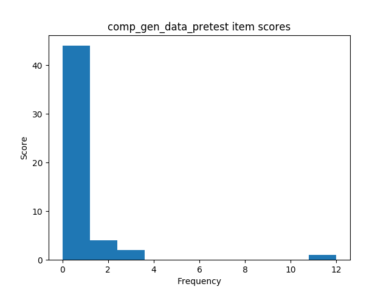 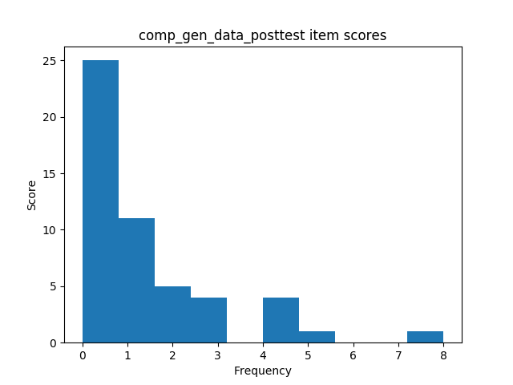 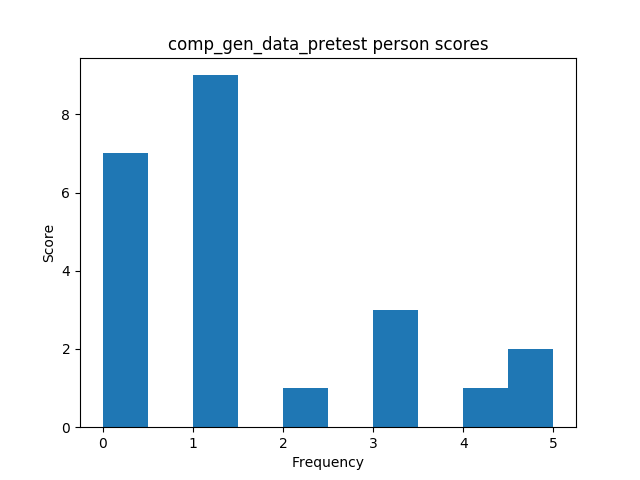 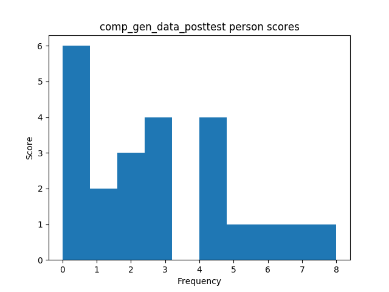
| Mann-Whitney-U k | Mann-Whitney-U p | Welch's t-test k | Welch's t-test p | |
|---|---|---|---|---|
| ctt | nan | nan | nan | nan |
| irt | -0.102 | 0.9195 | -0.102 | 0.9200 |
| adjusted irt | -0.106 | 0.9168 | -0.106 | 0.9168 |
| Mann-Whitney-U k | Mann-Whitney-U p | Welch's t-test k | Welch's t-test p | |
|---|---|---|---|---|
| ctt | nan | nan | nan | nan |
| irt | -0.124 | 0.9025 | -0.124 | 0.9037 |
| adjusted irt | -0.124 | 0.9025 | -0.124 | 0.9037 |
| Mann-Whitney-U k | Mann-Whitney-U p | Welch's t-test k | Welch's t-test p | |
|---|---|---|---|---|
| ctt | nan | nan | nan | nan |
| irt | -0.128 | 0.8988 | -0.128 | 0.8989 |
| adjusted irt | -0.128 | 0.8988 | -0.128 | 0.8989 |
| Mann-Whitney-U k | Mann-Whitney-U p | Welch's t-test k | Welch's t-test p | |
|---|---|---|---|---|
| pretest | nan | nan | nan | nan |
| posttest | nan | nan | nan | nan |
| abs_learn_gain | nan | nan | nan | nan |
| rel_learn_gain | nan | nan | nan | nan |
| Mann-Whitney-U k | Mann-Whitney-U p | Welch's t-test k | Welch's t-test p | |
|---|---|---|---|---|
| pretest | 0.034 | 0.9728 | 0.036 | 0.9719 |
| posttest | 0.073 | 0.9422 | 0.076 | 0.9404 |
| abs_learn_gain | 0.058 | 0.9545 | 0.060 | 0.9531 |
| rel_learn_gain | 0.056 | 0.9555 | 0.059 | 0.9541 |
| Mann-Whitney-U k | Mann-Whitney-U p | Welch's t-test k | Welch's t-test p | |
|---|---|---|---|---|
| pretest | 20.616 | 0.0000 | 21.576 | 0.0000 |
| posttest | 15.001 | 0.0000 | 15.208 | 0.0000 |
| abs_learn_gain | 0.057 | 0.9548 | 0.056 | 0.9564 |
| rel_learn_gain | 0.082 | 0.9357 | 0.079 | 0.9378 |